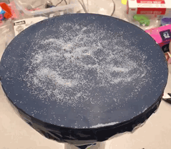

Sounds Like Fun
A tangible user interface design on improving the experience for people to learn cymatics.
Background
The cymatics which documents the visual effects sound have on materials such as water, powder, fine sand, or granules, was popularized by a Swiss physician Hans Jenny in his book Cymatics: The Study of Wave Phenomena, published in 1967. Jenny found that the cymatics “is not an unregulated chaos; it is a dynamic but ordered pattern”. The tonoscope was a device created to transform sound vibration into their visual representations (i.e., patterns) on a screen. For its interaction, the input is human voice through continuously singing or speaking; the output are different patterns caused by the different forms of sound vibration.
My role
Designer & Crafter
Team
Monik Pamecha, Michael Park
Duration
4 weeks
The challenge
There exists a significant number of people who are not able to interact with the tonoscope through continuously singing or speaking to view the beautiful sound patterns due to their vocal cords constraints.
The solution
Inspired by the tangible reality of cymatics, we attempt to incorporate a tangible user interface (TUI) design into the tonoscope, which aims to enhance the accessibility for all users to experience the cymatics through interacting with this TUI-based artifact.
System Design Process
System architecture
The system consists of four components as follows:
Sound board
This component is responsible for the actual transformation of sound and visualization of the properties of resonance, frequencies and standing waves.
Controller
This portion of the system is used for tweaking the properties of the sound wave in real time and transmitting the information to the processor.
Processor
This part is responsible for generating the actual sound wave after determining the attributes to be set from the controller and conveying it to the sound board.
Indicators
These are the LEDs that act as indicators conveying information about the selections on the controller and the properties of the sound waves that are currently being transmitted by the system.
Prototyping
When it comes to the sound board, a customized 3D-printed big-mouth funnel masked by a latex cloth has been used as the main board to display the sound patterns after we iterated with other different options. Meanwhile, the funnel is attached to a PVC pipe in which a wireless speaker is placed to deliver the sound source to the main board.
The controller has four potentiometers that represent the knobs which allow the user to interact to control different aspects of the sound being generated. Specifically, The first knob (i.e., Knob A) represents the waveform of the generated sound. The second knob (i.e., Knob B) represents the volume of the sound wave being generated. The third knob (i.e., Knob C) represents the frequency which ranges from 0 to 1024 Hz. The fourth knob (i.e., Knob D) represents the channel. Each channel represents a single wave with a particular combination of the attributes of the previous knobs. Also, The controller has an Arduino UNO board which is connected to all the the potentiometers and is responsible for interpreting the values of the knobs and also conveying the information to the processor as well as the indicators (i.e., LED lights).
The processor utilizes the information provided to it by the controller and generates precisely the sound as per the requested attributes. The Processor can run on any computer that supports node runtime. The code for audio generation is written in node along with the use an open source audio generation tool called ChuCk. The tool is capable of generating audio when information about wave form and their attributes is provided.
To assist in visualizing the invisible part of the cymatics as well as enhance the accessibility design of this artifact, we used LED lights as indicators for the channel selection and the frequency change. Specifically, Those three LED lights installed on the controller, are the channel selection indicators. When a channel is switched, to indicate which channel has been selected amongst the three, the respective LED lights up. The blinking of LED lights of the same color have been used to represent the frequencies of the waves that are running on a particular channel. The frequencies of the actual waves are scaled down so as to make a visible difference.

Output
After assembling the sound board, controller, processor and indicators and adding a thin scattering of salt on the main board, the artifact generates the following visual patterns according to sounds having different forms of vibration.

{kind=link}
{kind=link}
{kind=link}
{kind=link}
User Feedback
The SoundLikeFun artifact was presented twice for an open house exhibition held at the UC Berkeley School of Information. Major feedback gathered from the live user interaction with this artifact are as follows:
- The sound as well as its patterns which are reflected on the salt granules generated by this artifact, afford immediacy to users on learning the cymatics.
- Most users really like the approachable interaction when they hear the voice as well as watch the sound patterns through playing with knobs.
The Next Step
On the basis of interaction and usability problems detected from the exhibition, we are planning to improve this prototype through refining the connection between different components and the hardware materials for this device. Also, we are thinking about seeking for some tech-education toy commercialization opportunities to transform this TUI-based design into a educational toy that can bring an approach experience for people to learn the cymatics.